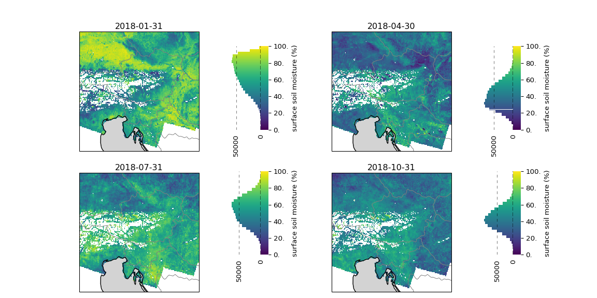

Code
import xarray as xr
from pathlib import Path
from tuw_education_notebooks.view_monthly_ssm import view_monthly_ssm, load_cmap
RESOURCES = Path("data")Ein Beispiel unter Verwendung der TU Wien Bodenfeuchte, entwickelt für GHG-Kit


import xarray as xr
from pathlib import Path
from tuw_education_notebooks.view_monthly_ssm import view_monthly_ssm, load_cmap
RESOURCES = Path("data")Die Datenvisualisierung stützt sich auf die Kunst, um durch die Kombination von geometrischen Objekten und Farben mit der Wissenschaft Geschichten aus Daten zu vermitteln. Im Idealfall sollten die Informationen leicht aus der Visualisierung extrahierbar sein, aber gleichzeitig sollten die wissenschaftlichen Elemente auf den Punkt genau sein. Letzteres ist wichtig, weil falsche grafische Darstellungen zu falschen Wahrnehmungen und Interpretationen führen können, die wiederum zu falschen Entscheidungen führen. Diese Fehler können absichtlich gemacht werden und somit betrügerisch sein, aber häufiger sind es unschuldige Fehler mit potenziell weitreichenden Folgen. Bei der Darstellung von Daten auf Karten müssen wir noch weitere Aspekte berücksichtigen, wie z. B. die geografische Projektion, Gittertypen und die Abbildung von Variablen als dritte Dimension in einem geeigneten Farbraum.
Für die Beispiele in diesem Notizbuch werden wir die für GHG-Kit entwickelte Bodenfeuchte verwenden. Um Daten über die Bodenfeuchte zu erhalten, nutzen wir die allgemeine lineare Beziehung zwischen der Sentinel-1-Mikrowellenrückstreuung und der Bodenfeuchte. Die an der TU Wien entwickelte Methode zur Erkennung von Veränderungen berechnet den trockensten und feuchtesten Zustand innerhalb eines Zeitraums und setzt dann die beobachteten Rückstreuwerte in Beziehung, um die relative Bodenfeuchte oder “Nässe” als Prozentsatz der maximalen Sättigung zu ermitteln, wie in Abbildung 2.1 gezeigt.
Für die Beispiele zeigen wir eine Teilmenge von Daten über Österreich. In Österreich gibt es zwei große Herausforderungen für die Erkennung von Bodenfeuchte:
In dem für GHG-Kit entwickelten Bodenfeuchteprodukt gehen wir diese Herausforderungen an, indem wir radiometrische, geländekorrigierte Rückstreudaten verwenden, um das Gelände zu “glätten”, und statische räumliche Filterung von dichter Vegetation bei hoher Auflösung (siehe Anhang).
In den folgenden Zeilen laden wir eine Teilmenge des Bodenfeuchtedatensatzes mit “xarray”, der als Zarr-Archiv gespeichert ist.
SSM_dc = xr.open_zarr(RESOURCES / "SSM-CD-SIG40-R-DVEG_2018.zarr/")
SSM_dc<xarray.Dataset> Size: 8GB
Dimensions: (time: 723, y: 1200, x: 1200)
Coordinates:
* time (time) datetime64[ns] 6kB 2018-01-01T05:08:47 ... 2018-12-31...
* x (x) float64 10kB 4.8e+06 4.801e+06 ... 5.399e+06 5.4e+06
* y (y) float64 10kB 1.8e+06 1.799e+06 ... 1.201e+06 1.2e+06
Data variables:
band_data (time, y, x) float64 8GB dask.array<chunksize=(100, 100, 100), meta=np.ndarray>
spatial_ref int64 8B ...
Wir haben diesen Datensatz entlang der zeitlichen Dimension neu abgetastet und dabei die Bodenfeuchte als Mittelwerte über Monate hinweg aggregiert.
SSM_dc_monthly = SSM_dc.resample(time="ME").mean().compute()
SSM_dc_monthly<xarray.Dataset> Size: 138MB
Dimensions: (time: 12, y: 1200, x: 1200)
Coordinates:
* x (x) float64 10kB 4.8e+06 4.801e+06 ... 5.399e+06 5.4e+06
* y (y) float64 10kB 1.8e+06 1.799e+06 ... 1.201e+06 1.2e+06
* time (time) datetime64[ns] 96B 2018-01-31 2018-02-28 ... 2018-12-31
Data variables:
band_data (time, y, x) float64 138MB 88.5 91.39 89.86 ... nan nan nan
spatial_ref (time) int64 96B 0 0 0 0 0 0 0 0 0 0 0 0
Jetzt können wir die monatlichen Bodenfeuchtedaten auf einer Karte darstellen. Um eine Variable wie die Bodenfeuchte in den Dimensionen x (Längengrad) und y (Breitengrad) darzustellen, muss eine gute Darstellung in einem 3D-Farbraum gefunden werden. Dies wird auch als Pseudofärbung bezeichnet: eine Methode zur Darstellung von Aspekten der Daten in einer kontinuierlichen Ebene. Für eine effektive Pseudofärbung müssen wir die richtige Farbkarte finden. Wir können uns die folgenden Fragen stellen:
In den meisten Situationen können wir eine von drei Arten von Farbkarten in Betracht ziehen:
In den folgenden Karten können wir sehen, was schief gehen kann, wenn wir diese Aspekte nicht berücksichtigen.
view_monthly_ssm(SSM_dc_monthly, "seismic")
Was ist bei den obigen Karten falsch gelaufen? Der erste Fehler ist, dass wir eine divergierende Farbkarte verwendet haben, obwohl die Daten keinen kritischen Mittelwert haben. Der scharfe Kontrast zwischen Blau und Rot lässt es außerdem so aussehen, als ob die Daten binär wären, aber in Wirklichkeit haben wir gleichmäßig verteilte Werte aus einer Stichprobenverteilung, die sich einer Normalverteilung annähert (wie aus den Histogrammen ersichtlich ist). Darüber hinaus haben wir eine Farbkarte gewählt, die Weiß enthält. Auch das, was wir auf diesen Karten nicht sehen, enthält Informationen: z. B. fehlende Datenpunkte. Durch die Wahl der Farbe Weiß erwecken wir jedoch den falschen Eindruck fehlender Daten, obwohl die Bodenfeuchtigkeit in Wirklichkeit bei 50 % liegt.
Lassen wir uns das erste Problem lösen. Wir tun dies, indem wir die sequentielle “viridis”-Farbkarte wählen. Bei dieser Farbkarte ist die Farbe eine lineare Funktion der Variablen mit einem sehr breiten Wahrnehmungsbereich (d. h. sie ist sehr bunt). Viridis ist außerdem farbenblindheitsfreundlich und druckt gut in Graustufen, wobei die Einheitlichkeit der Wahrnehmung und die Breite des Spektrums erhalten bleiben.
view_monthly_ssm(SSM_dc_monthly, "viridis")
Diese Farbkarte behebt die vorherigen Probleme. Wir sehen viel mehr Nuancen in der Varianz der Bodenfeuchtigkeit. In erster Linie sehen wir auch, dass wir tatsächlich fehlende Datenpunkte haben. Es gibt ein ganzes Gebiet in den Alpen, das nicht gut abgedeckt ist. Das ist eigentlich ein bekannter Effekt der Messtechnik. Wir können nicht alle geometrischen Effekte mit der radiometrischen Geländekorrektur in der Mikrowellen-Fernerkundung ausgleichen. In sehr steilen Regionen wie den Alpen müssen wir die Daten aufgrund von Abschattungen und Überlagerungseffekten maskieren. Abschattungen treten auf, wenn das Gelände so steil ist, dass es die Sicht auf nachfolgende Punkte versperrt, so dass keine Messungen möglich sind und die Rekonstruktion der Szene behindert wird (weitere Informationen siehe Anhang).
Dieser letzte Schritt ist eher subjektiv und bezieht sich auf die Psychologie der Farben: die vielfältigen Bedeutungen und Gefühle, die Menschen mit einer Farbe verbinden. Hier verwenden wir einen von der TU Wien entwickelten Farbverlauf, der von Dunkelbraun für trockene Böden zu Blau für feuchte Böden übergeht.
SSM_CMAP = load_cmap(RESOURCES / "colour-tables/ssm-continuous.ct")
view_monthly_ssm(SSM_dc_monthly, SSM_CMAP)
In dieser letzten Wiedergabe der Karten gibt es eine schöne Beziehung zwischen Farbe und Bodenfeuchtigkeit, wobei die dunkelbraune Farbe Bilder von ausgetrockneten Böden und die blaue Farbe von wassergesättigten Bedingungen hervorruft.
Die Rückstreuung von Mikrowellen ist stark vom Betrachtungswinkel abhängig, d. h. die gemessene Rückstreuung variiert stark, je nachdem, aus welchem Winkel wir auf den Boden schauen. Der Einfallswinkel, unter dem der Boden von einem Sentinel-1-Sensor aus gesehen wird, hängt von seiner Umlaufbahn ab. Um dies zu korrigieren, entwickelte Bauer-Marschallinger u. a. (2019) eine Methode zur Normalisierung auf einen gemeinsamen Einfallswinkel von 40 Grad. Diese Methode geht jedoch von einer relativ flachen Topografie aus und kann in steilem und abwechslungsreichem Gelände versagen. Daher verwenden wir ein hochauflösendes digitales Höhenmodell (DEM), um die Rückstreuung in hoher Auflösung zu korrigieren, bevor wir auf 500 Meter hochtakten und auf den gemeinsamen Einfallswinkel normalisieren.
Dichte Vegetation kann das Signal des Bodens behindern, oder es kann so schwach sein, dass es nicht von Rauschen zu unterscheiden ist. Um das Signal über dicht bewachsenen Gebieten zu verstärken, hat Massart u. a. (2024) eine räumliche Filtermethode entwickelt, mit der dichte Vegetation bei hoher Auflösung maskiert wird, bevor das Upsampling auf 500 m erfolgt.
Layover tritt auf, weil das Mikrowellenradar die Entfernung zwischen dem Sensor und einem Punkt auf dem Boden misst. In sehr steilem und hohem Gelände ist das Gelände “näher” am Sensor, was die gemessene Entfernung verkürzt und dazu führt, dass der Punkt vor anderen im Raster erscheint.
![]()